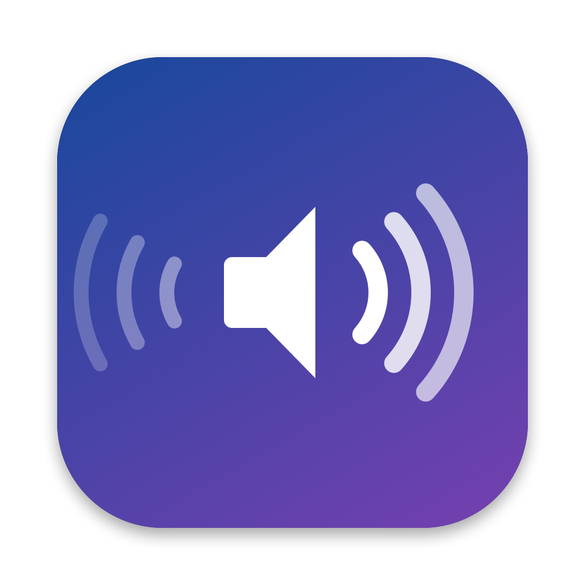
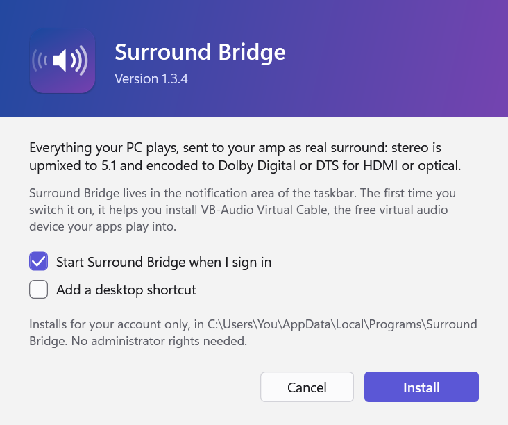
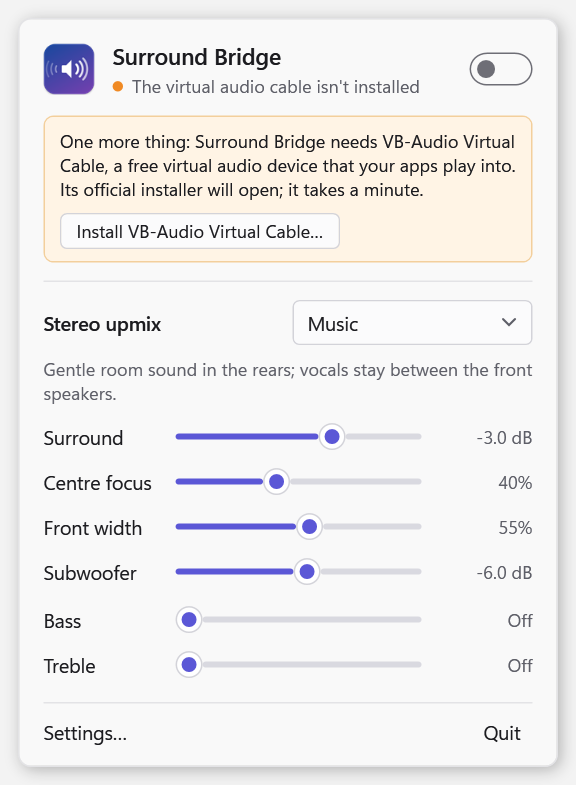
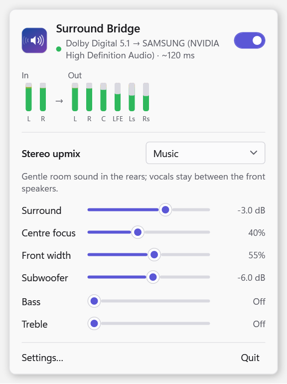
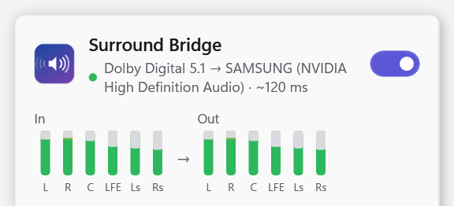
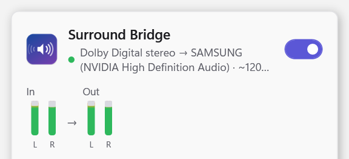
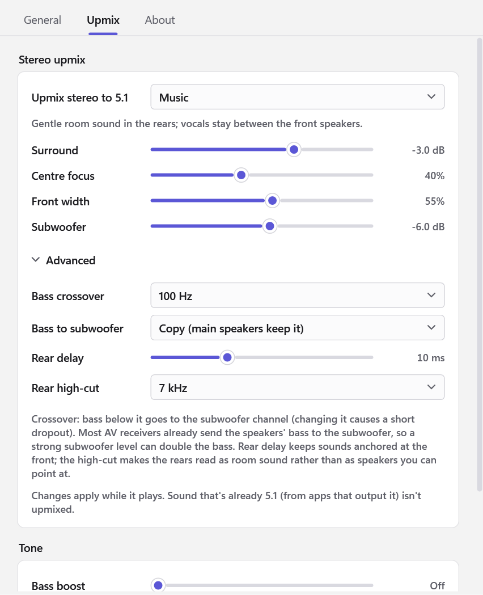
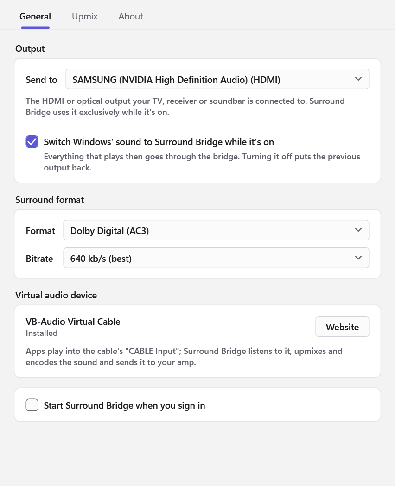

Surround Bridge turns your computer into a surround source. Whatever plays (a streaming site, a game, a music app, a video call) reaches your receiver, soundbar or amplifier as Dolby Digital, DTS or multichannel PCM, over HDMI or optical.
Sound cards used to do this with a feature called "Dolby Digital Live". Today most computers only send stereo over optical, and many amplifiers and soundbars (especially ones connected through the TV's optical output) can only play surround when it arrives as Dolby Digital or DTS. Surround Bridge fills that gap:
While Surround Bridge is on, it points Windows' sound output at a virtual audio cable, an invisible sound device that apps play into. Surround Bridge listens to the other end of the cable, processes the sound and sends it to your HDMI or optical output, which it uses exclusively while it's on. Switch it off and Windows' previous output comes back.
The whole chain adds roughly a tenth of a second of delay (about 120–150 ms with Dolby Digital, about 90–110 ms with PCM). That's fine for music and usually unnoticeable for video; see Troubleshooting if lip sync bothers you.

That's it: play something and it comes out of all your speakers. The status line in the flyout shows what's going out, for example Dolby Digital 5.1 → SAMSUNG · ~120 ms.

Exclusive mode.Surround Bridge needs your HDMI or optical output to itself while it's on. If nothing reaches the amp, open Windows' Sound settings ▸ your HDMI/optical device ▸ Advanced and make sure Allow applications to take exclusive control of this device is ticked.
The Mac version has the same upmix modes, sliders, tone controls and formats as the Windows version. The newest Windows features (the per-channel meters and the automatic 5.1 handling of chapter 8) come to the Mac in a later version.
Click the Surround Bridge icon in the notification area to open the flyout. It has everything you need while listening; click anywhere else (or press Esc) to close it.

1 2 3 4 5 6Every change applies while the sound plays.
The meters show only the channels in use, so you can see at a glance what Surround Bridge is doing:
| What's playing | In | Out |
|---|---|---|
| Stereo, upmix on | L R | L R C LFE Ls Rs |
| Stereo, upmix off | L R | L R |
| 5.1 from an app | L R C LFE Ls Rs | the same 6 |
| 7.1 (PCM) | L R C LFE Lb Rb Ls Rs | the same 8 |
The labels are the speakers: L/R front left and right, C centre, LFE the subwoofer channel, Ls/Rs surround (side) left and right, Lb/Rb back left and right. Green is normal level; the top of a bar turns yellow and red close to full scale.


The upmix spreads stereo over your 5.1 speakers. It only works on stereo: sound that's already 5.1 is never upmixed.
| Mode | What it does |
|---|---|
| Off | Stereo stays stereo. Use it when you want your amp's own upmix (Dolby Surround, DTS Neural:X and the like), or plain two-channel listening. |
| Music | Gentle room sound in the rears; vocals stay between the front speakers. The default. |
| Movies & TV | Dialogue locked to the centre speaker, ambience behind you. |
| Wide | Bigger, more enveloping sound with stronger rears and a wider front. |
| Custom | Your own settings: moving any slider switches to Custom, starting from the preset you were on. |
| Slider | Range | What it does |
|---|---|---|
| Surround | −20 to +6 dB | How loud the rear (surround) speakers are. |
| Centre focus | Phantom–Locked | How much of what's in the middle of the stereo picture (voices, solo instruments) goes to the centre speaker. Phantom leaves the centre speaker silent and keeps voices between the front pair, as in stereo; Locked puts them firmly in the centre. |
| Front width | 0–100% | How wide the front sound is. 50% is As recorded; higher pushes sounds further out to the sides. |
| Subwoofer | −20 to +6 dB | How loud the subwoofer (LFE) channel is. |
| Setting | What it does |
|---|---|
| Bass crossover | Bass below this frequency goes to the subwoofer channel. Changing it causes a short dropout. |
| Bass to subwoofer | Copy: the main speakers keep their bass too. Move: it's taken out of them. Most AV receivers already send the speakers' bass to the subwoofer, so a strong subwoofer level can double the bass. |
| Rear delay | 0–30 ms. Keeps sounds anchored at the front by letting the rears arrive a little later. |
| Rear high-cut | Softens the top end of the rears, so they read as room sound rather than as speakers you can point at. |

Our ears lose bass first, and treble too, when sound gets quiet (the Fletcher-Munson, or equal-loudness, curves). That's why music played softly sounds thin. Turn up Bass and Treble (each Off to +12 dB) for late-night listening at low volume and turn them back down for normal levels.
Open the flyout and click Settings…. The General tab has:
The Upmix tab has the full sliders, the advanced settings and the tone controls; About shows the version, the credits and the uninstall button.

Which format?Choose Dolby Digital unless you have a reason not to: it works over optical and through TVs, and every surround decoder plays it. Choose Multichannel PCM if your computer is connected straight to an AV receiver by HDMI: it's uncompressed and has the least delay. DTS is there for amps that prefer it (some TVs don't pass DTS through).
Out of the box the virtual cable is stereo, so apps that could play 5.1 (Netflix in a browser, film players, games) mix it down to stereo first, and Surround Bridge then upmixes it. To get real 5.1 through, set the cable to 5.1 or 7.1 once and leave it there.
Windows mixes every app into the cable's format, so the cable always carries 5.1 (or 7.1) even when an app plays stereo; the extra channels are simply silent. Surround Bridge therefore listens to the sound itself:
| What's playing | Upmix on | Upmix off |
|---|---|---|
| 5.1 or 7.1 | Passed through as it is, straight away. (Dolby Digital and DTS carry 5.1; multichannel PCM carries 7.1 too.) | |
| Stereo | Upmixed to 5.1, once only the front pair has had sound for about 3 seconds (straight away if it's the first thing that plays). | Sent as 2.0, so your amp sees stereo and its own upmix can be switched on. |
| Silence, pauses | Nothing changes, so pausing a film doesn't switch anything. | |
Tip.The meters show this as it happens: a 5.1 cable playing stereo shows just L R under In.
| Problem | What to do |
|---|---|
| No sound from the amp | Check Settings ▸ General ▸ Send to is the output your amp is connected to, and that it allows exclusive mode (Sound settings ▸ the device ▸ Advanced). Check the amp is set to the right input. If the status line says Starting… for long, switch Surround Bridge off and on. |
| "The virtual audio cable isn't installed" | Click Install VB-Audio Virtual Cable… in the flyout and then Install Driver in VB-Audio's window. If it still doesn't appear, restart Windows. |
| "… isn't connected" | The TV or amp is off or unplugged. Switch it on; Surround Bridge starts by itself when the output appears. |
| The amp shows PCM 2.0 or stereo | Surround Bridge isn't on, or Windows' output isn't the cable: switch it on and keep Switch Windows' sound to Surround Bridge ticked. With the upmix off and the cable at 5.1, stereo is sent as 2.0 on purpose (chapter 8). |
| DTS doesn't work | Some TVs don't pass DTS from HDMI to optical. Use Dolby Digital. |
| Clicks or dropouts | Close other apps that might use the HDMI device. Surround Bridge raises its buffer by itself after a dropout. If it persists, try another bitrate or format. |
| Lip sync is off | The bridge adds about 0.1 s. Many players and TVs have an audio delay or AV sync setting; delaying the video by the latency shown in the status line fixes it. Multichannel PCM has the least delay. |
| Too much bass | Your receiver may already send the speakers' bass to the subwoofer: lower the Subwoofer slider or set Bass to subwoofer to Copy. |
| Sound doesn't come back after quitting | Quitting restores your previous output. If something went wrong (a crash), Surround Bridge restores it the next time it starts; you can also pick the output in Windows' Sound settings. |
On Windows, open Settings ▸ About and click Uninstall Surround Bridge…, or use Windows Settings ▸ Apps ▸ Installed apps ▸ Surround Bridge. Your previous sound output is restored. VB-Audio Virtual Cable stays installed; remove it with its own setup's Remove Driver if you don't need it any more.
On a Mac, open Settings ▸ About ▸ Uninstall; it removes the app and its audio device.
Apps play into VB-Audio Virtual Cable, free (donationware) software by VB-Audio Software, installed with its own official installer; Surround Bridge isn't affiliated with VB-Audio. The Mac's audio device is built from the open-source BlackHole driver (GPL-3) under Surround Bridge's own name; it isn't an official BlackHole build. Audio processing uses FFmpeg, under the LGPL.
"Dolby Digital" and "DTS" are trademarks of their owners; Surround Bridge isn't affiliated with or licensed by them. Surround Bridge is a sister app of Surround Player.